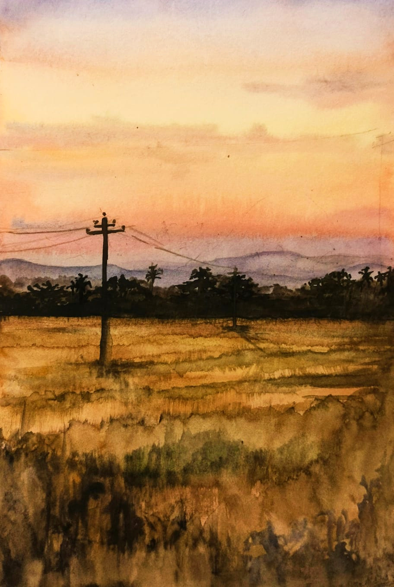
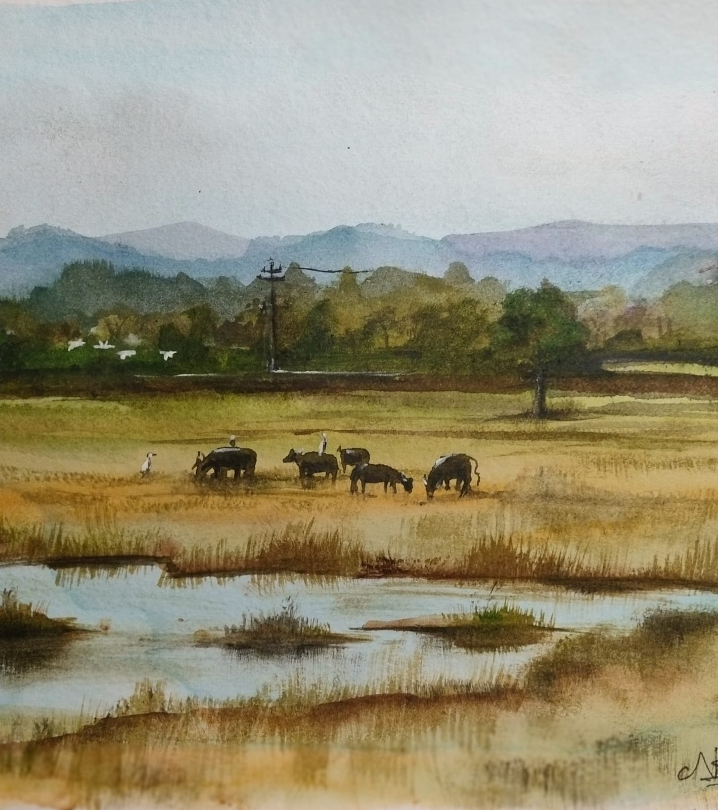
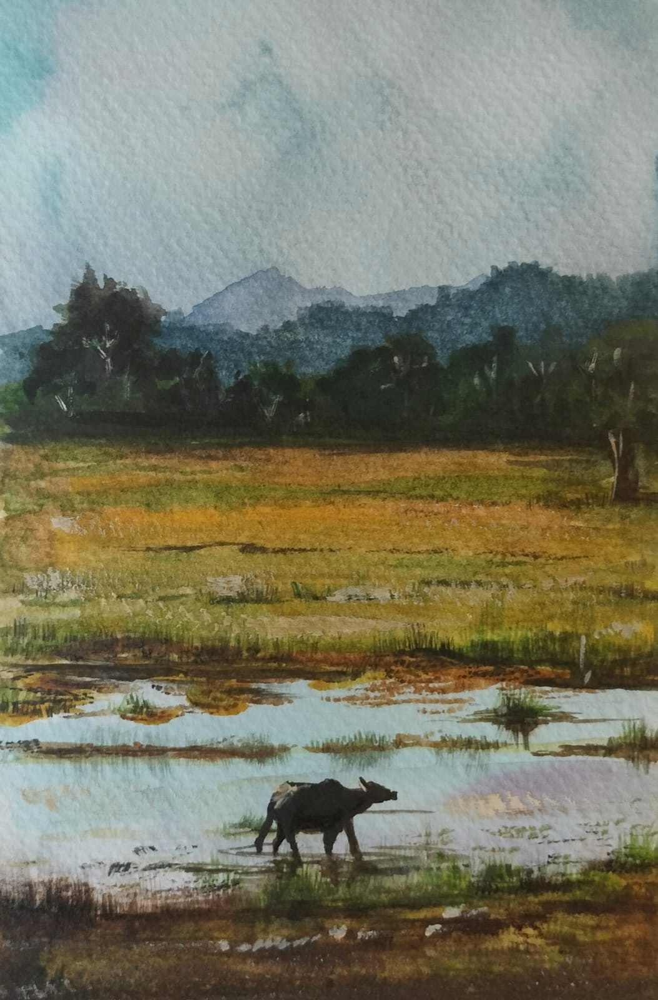

PersonalI am married and live with my husband (both of us are researchers) and our dog in Goa. Outside of research and academics, I am interested in art (watercolor), Hindustani classical music (learning to play the sitar) and the outdoors (trekking and cycling). These are a few watercolors I've painted of the land surrounding our IIT Goa campus in Farmagudi, Goa.
   Blog: Edible Wild Berries of Goa
|